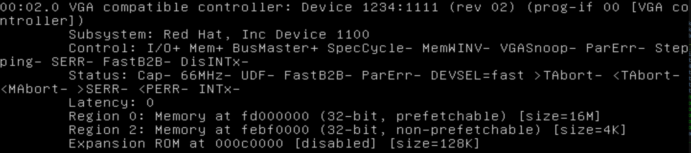
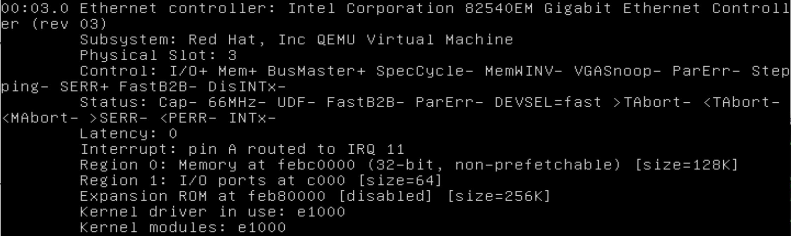

seL4 on Qemu
This is a quick guide on how to run seL4 x86/x64 in Qemu. QEMU is a generic and open source machine emulator and virtualizer, and can emulate different architectures on different systems.
Qemu can run ARM targets too, more info about that can be found in Debugging Guide.
We used Ubuntu 16.04 for our tests, but in theory qemu ‘‘should’’ work the same under Windows/MacOS.
Note that VMWare can be used to run seL4 too, but it requires a licensed version of VMWare workstation (although the free VMWare player can be used too - but it doesn’t offer a lot of features, making its use even more cumbersome). VMWare takes longer to load and is more “heavy-weight” than qemu. But the main reason for going with qemu is finer control over what hardware is emulated. We ran into some significant problems running seL4 on VMWare because of hardware mismatch.
Prerequisites
With a recent Ubuntu (16.04+) all you need to do should be
sudo apt install qemu-system-x86
Your host machine has to have a CPU that supports Vt-x virtualization
(for Intel CPUs), or AMD-V (for AMD CPUs, but that wasn’t tested). Any
newer i7 core should have Vt-x. Note that you might have to enable it
first from BIOS. You can always check by lscpu and look for vmx flag.
Compilation
We are using camkes-vm Github repository. It contains Virtual Machine build as a CAmkES component. More information about the VM on seL4 can be found on CAmkESVM page.
I replicate some of the steps described there to make it easier to
follow. First pull the code from the repository using repo tool.
mkdir test_default
cd test_default
repo init -u https://github.com/seL4/camkes-vm-manifest.git
repo sync
We use optiplex9020 configuration, because it is the most generic
one. The other configurations for
CMA34DBMC can be
compiled too, but you can’t run them properly in qemu because they
require a very specific hardware.
Type:
make clean
make optiplex9020_defconfig
make silentoldconfig
make
If everything goes fine, you should end up with two binaries in
images directory: capdl-loader-experimental-image-ia32-pc99
which contains the VM (and other components) and kernel-ia32-pc99
which is the seL4 kernel.
Running Qemu
To run the images we just compiled, do:
cd images
qemu-system-x86_64 -m 512 -kernel kernel-ia32-pc99 -initrd capdl-loader-experimental-image-ia32-pc99 --enable-kvm -smp 2 -cpu Nehalem,+vmx -nographic
And you should be able to see the login prompt after a while:
Welcome to Buildroot buildroot login:
Login with the username “root” and the password “root”. Again, for more details about the VM, go to CAmkESVM page.
The qemu arguments are:
- qemu-system-x86_64 - emulate x86/x64 system
- -m 512 - amount of RAM dedicated to qemu VM
- -kernel img_name - path to kernel image
- -initrd img_name - path to application image
- –enable-kvm - necessary to enable Vt-x in qemu (seL4 can’t start a VM without this flag)
- -smp 2 - number of CPUs dedicated to qemu VM
- -cpu Nehalem,+vmx - because some of the newer CPUs come with features that the Linux running in seL4 VM doesn’t recognize (such as advanced power management etc) we had better luck using a default qemu CPU and pass it only the vmx flag from the host CPU (again, your host machine must have Vt-x support). You should be able to use other CPU types (run qemu with -cpu help) and just pass the vmx flag, but in our case Nehalem was closest to the host machine CPU.
- -nographic - the output of the serial port goes to the terminal. You can instead run qemu with -serial /dev/XX/XX where the serial device is the output of tty command in the terminal. In that case you get graphical screen and read-only serial output
Boot from a Hard Disk
In some cases it can be useful too boot from a hard drive, instead of running a kernel image directly. The main reason could be that you need to use a frame buffer to display graphical output. ‘‘Qemu does not support VBE with loading a kernel with –kernel. You need to use GRUB to load the kernel for the results you want, as that initializes VBE. Qemu with -vga std DOES support VBE, it just wont initialize it for you (like grub).’’ (more here)
The most convenient way to get a hdd set up, was to first set up a
VMWare virtual hard drive as described in
VMWare (i.e.
install linux, modify grub, save images on the hdd). The second step is
to convert the VMDK image to qcow2 (qemu) image. Use qemu-img:
qemu-img convert -f vmdk -O qcow2 image.vmdk image.img
You can certainly do this directly with a qemu image, without the conversion step, but we din’t test it.
Once you have the qemu image, you can run qemu with the following command:
qemu-system-x86_64 -m 512 -hda sel4_test.img --enable-kvm -smp 2 -cpu Nehalem,+vmx -serial /dev/pts/3 -vga std
Where the -vga std option should pass the frame buffer to the qemu VM. Having Linux in seL4 VM print something on the screen (like a login prompt) is still under development though.
Hardware emulation
Qemu by default provides a virtual Ethernet controller and VGA controller. A good way to find what devices are available is to install Linux on a virtual hard drive and then probe what is available.
Qemu wiki provides a good description how to create a new image, and how to boot from an iso file:
qemu-img create -f qcow2 linux.img 3G qemu-system-x86_64 -m 256 -hda linux.img -cdrom minimal.iso -enable-kvm
We used Ubuntu Minimal as the ISO.
Once you get your Linux system installed, you can type lspci, you should see something like this:
 
The first device is the VGA controller, the second one is the Ethernet controller. You can verify that seL4 can see these devices, because when you run the seL4 images from before, seL4 scans the pci bus too. Here is the output:
PCI :: 00.02.00 : Unknown vendor ID. Unknown device ID. (vid 0x1234 did 0x1111) line0 pin0
BAR0 : [ mem 0xfd000000 sz 0x1000000 szmask 0xff000000 prefetch ]
BAR2 : [ mem 0xfebf0000 sz 0x1000 szmask 0xfffff000 ]
lib_pci_scan_dev found pci device 0 3
BASE_ADDR[0] ----
base_addr_space[0]: 0x0 [PCI_BASE_ADDRESS_SPACE_MEMORY]
base_addr_type[0]: 0x0 [ 32bit ]
base_addr_prefetchable[0]: no
base_addr[0]: 0xfebc0000
base_addr_size_mask[0]: 0xfffe0000
BASE_ADDR[1] ----
base_addr_space[1]: 0x1 [PCI_BASE_ADDRESS_SPACE_IO]
base_addr_type[1]: 0x0 [ 32bit ]
base_addr_prefetchable[1]: no
base_addr[1]: 0xc000
base_addr_size_mask[1]: 0xffffffc0
PCI :: 00.03.00 : intel Unknown device ID. (vid 0x8086 did 0x100e) line11 pin1
BAR0 : [ mem 0xfebc0000 sz 0x20000 szmask 0xfffe0000 ]
BAR1 : [ io 0xc000 sz 0x40 szmask 0xffffffc0 ]
where the first device is the VGA controller, and the second one is the Ethernet controller. Qemu also passes USB Host controller and PCI bridge. Indeed, if you log into the seL4 VM Linux, you wont see any of these devices because by default they aren’t passed to the Linux VM.
Later we will add more info about how to modify the camkes to be actually able to use this hardware.